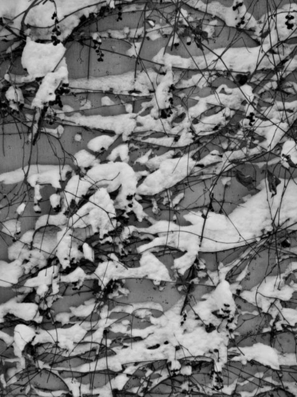
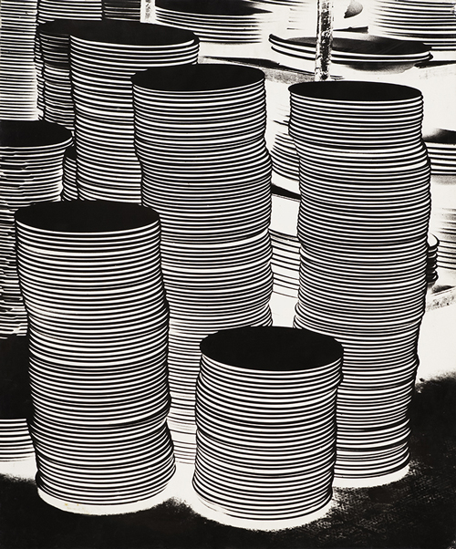
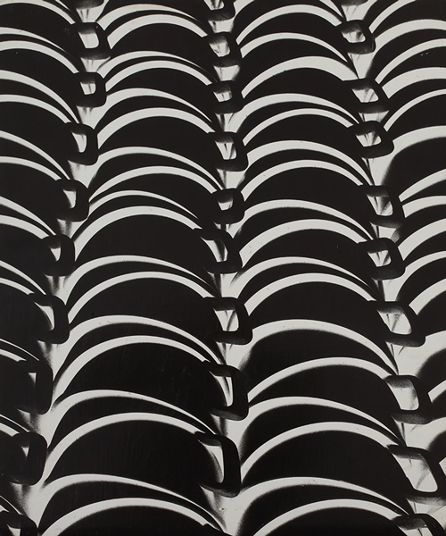

Meine Arbeit ist mir notwendig, mich mit der Umwelt auseinanderzusetzen. In der Natur suche ich die Ordnung und möchte sie aufzeigen.
Monika von Boch
Betrachte die angeordneten Teller aus unterschiedlichen Perspektiven und nimm ein Foto auf. Du kannst die Objekte von allen Seiten betrachten (wischen) und in der Größe verändern (zoomen).
Betrachte die angeordneten Teller aus unterschiedlichen Perspektiven und nimm ein Foto auf. Du kannst die Objekte von allen Seiten betrachten (wischen) und in der Größe verändern (zoomen).

ordnung

1/2 – Monika von Boch, Tellerstöße, 1956/1958, Silbergelatinepapier, Negativabzug, 59,7 x 49,6 cm

2/2 – Monika von Boch, Tassen, negativ, 1958, Silbergelatinepapier/Hartfaserplatte, Negativabzug, 58,9 x 49 cm
Monika von Boch gewinnt als Werksfotografin bei Villeroy & Boch viele Einblicke in die Glas- und Keramikherstellung, die sie auch als Künstlerin spannend findet.
Mehr...
Sie interessiert sich vor allem für die Anordnungen der in großer Stückzahl gefertigten Gegenstände. Geordnet in Reihen, Stapeln und Bündeln verschmelzen diese Einzelteile zu ganz eigenartigen Gebilden. Zum Teil verfremdet sie die Motive durch Ausschnitte und Kontraste so, dass man erst auf den zweiten Blick erkennt, was es eigentlich ist. Wichtig sind ihr nur die Linien und Formen, die sich aus der Ordnung ergeben und der Vorgang des Fotografierens selbst, die Wahl des Standorts und des Ausschnitts. Wenn sie wie hier den Negativabzug wählt, wird deutlich, dass es in der Fotografie immer auch um einen Abdruck geht, den das Licht als Spur hinterlässt. Monika von Boch hat sich intensiv mit ihrer direkten Umgebung auseinandergesetzt, in der Fabrikhalle genauso wie in der Natur. Sie schreibt: “Selten ging ich auf Reisen. So vieles vor meiner Tür ist noch nicht erkannt und verarbeitet.” Sie meint damit, dass es keinen besonderen Ort braucht, um Dinge zu sehen, die interessant sind. Das Sehen selbst ist interessant. Auch kann man überall Ordnungen und Strukturen erkennen, wenn man genau genug hinsieht. Du kannst dafür aus Deinem Fenster schauen, auf den Boden unter Dir oder in den Küchenschrank. Vielleicht findest Du sogar Ordnung in Deinem unaufgeräumten Zimmer, versuch es mal.